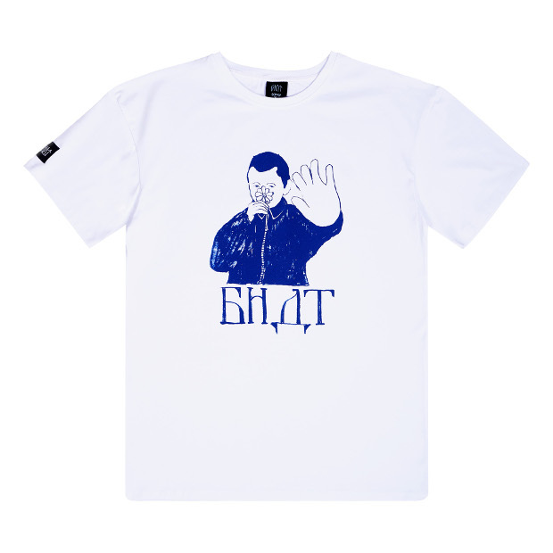

БНДТ - это бренд из Калининграда за которым стоит группировка райдеров снимающих большие BMX видео, и создающих вещи передавая через них свои мысли и идеи. БНДТ развивает и поддерживает не только BMX-сцену, но и локальных художников, музыкантов, fixed gear гонщиков. Настоящий Балтийский стиль. Название БНДТ (сокращённо «Бандиты») появилось благодаря цитате из кинофильма БРАТ: «Здорова бандиты!». Эту фразу при каждом выезде на стрит говорил один из участников группировки, как приветствие. С 2013 года и по сегодняшний день эта цитата стала традицией.
Тут конечно не 150 знаков, но надеюсь это не страшно
Футболка БНДТ Начало
Лонгслив БНДТ Сообщество
Лонгслив БНДТ Тайна Камней (Кислота)